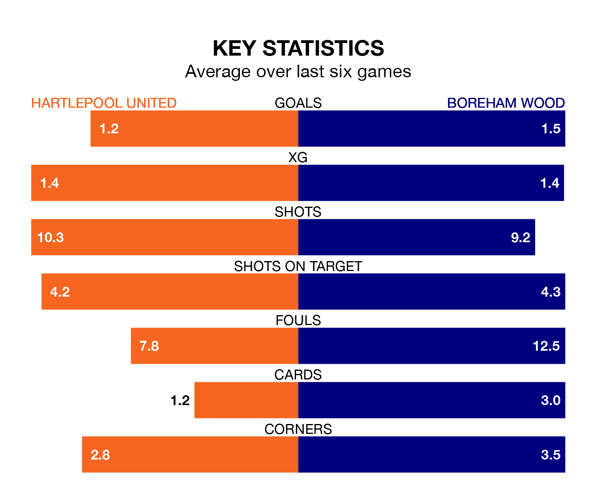

Hartlepool United host Boreham Wood on Saturday at the Suit Direct Stadium in the National League.
In their last league match, on February 10, Hartlepool drew with Woking 1-1 away, with their goal scored by Joe Grey.
Boreham Wood lost, 2-1 away at Oldham Athletic on Tuesday, with Mohammed Ali Omar Sagaf scoring their goals.
In the last 10 years, Hartlepool and Boreham Wood have played each other on nine occasions. They won two each, and they drew five times.
On average, Pools scored 1.3 goals and the Wood 0.9 in those matches.
Their last meeting was on October 4, when Boreham Wood won 1-0 at home.
With 42 goals in 33 games so far this season, Boreham Wood are scoring at below the league average rate with 1.3 goals per game. And they are conceding more than average, letting in 53 goals at a rate of 1.6 per game.
Hartlepool, meanwhile, are average scorers, with 1.5 goals per game. They have conceded 1.8 goals per game.
United are in mixed form in the National League, with three wins and a draw from their last six games.
With two wins and two draws over that period, the Wood's form is slightly worse – they have taken eight points from 18, compared to Pools' 10.
The away team are 14th in the table after 33 games, of which they have won nine and drawn 13, earning 40 points.
The hosts are two places ahead of Boreham Wood in 12th, with 12 wins and five draws putting them on 41 points.
Updated: 12:06 (UTC), 15/02/24